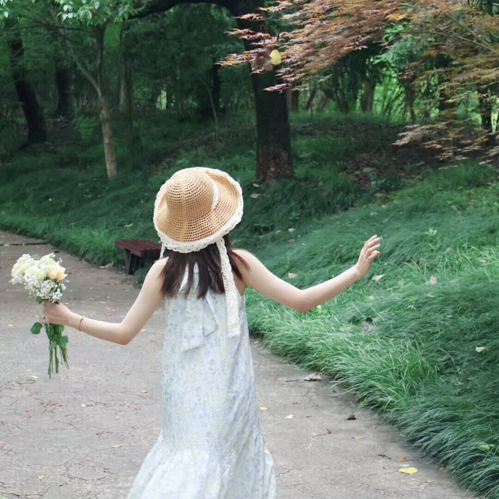

Consumer psychology
How expectations, emotions, and context shape consumption, saving, and perceived value.
I study psychology at Zhejiang University, with a curiosity for the small forces behind our everyday choices.
My interests lie in consumer behavior, judgment under uncertainty, and how people interact with AI. I explore these questions through experiments and, occasionally, through things I build.

I care about the small psychological processes behind choices, especially when the future feels uncertain.
How expectations, emotions, and context shape consumption, saving, and perceived value.
How people respond to risk and uncertainty, and weigh the present against the future.
How AI identities and feedback shape evaluation, trust, and adoption.
B.Sc. in Psychology · expected 2028
Leading an undergraduate project on how AI and human creator labels shape evaluations.
Contributed to a vivo × Zhejiang University study on how photos evoke feelings and affect user choices.
Alongside research, I enjoy creating interactive experiences and games.
An independent project bringing psychology and AI into an interactive emotional well-being experience.
Play in browser ↗An original web-based adaptation of a traditional Chinese board game.
Explore the repository ↗Have a question, an idea, or something interesting to discuss? I'd love to hear from you.
3240100942@zju.edu.cn